High-energy interferometry on X-ray tubes
M. Abis, G. Lovrić, M. Büchner, Z. Wang, M. Stampanoni
Goals and motivation
- feasibility of phase contrast on tubes with \(>100\) kVp
- typical environment for medical, security and material science applications
Grating interferometry
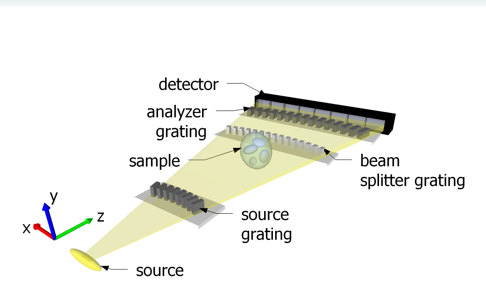Grating interferometry
phase stepping
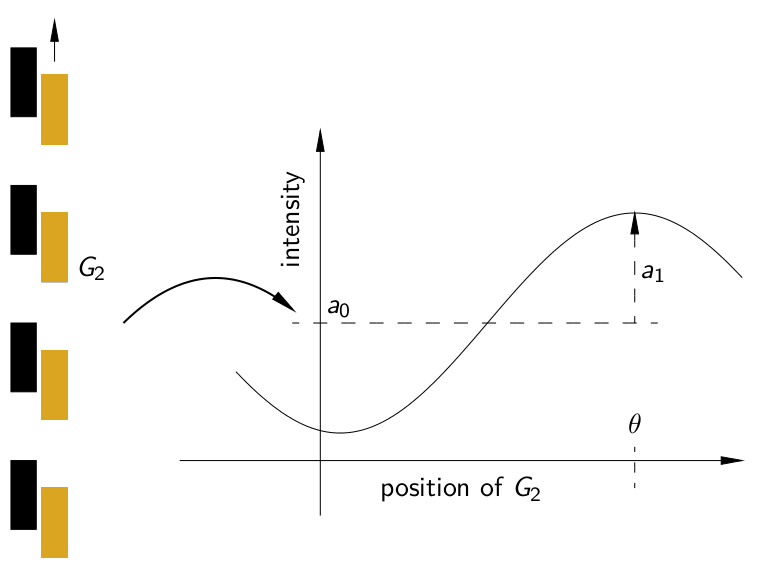\( n = 1 - \delta + i \beta \)
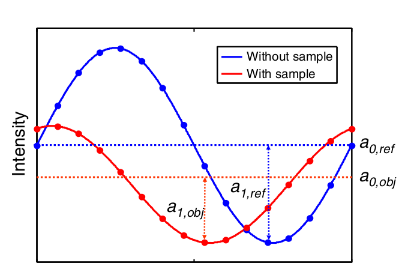
- ratio of the averages \(A\) → \( \beta \)
- phase difference → \( \delta \)
- ratio of the amplitudes \(B\) → scattering
High aspect ratio
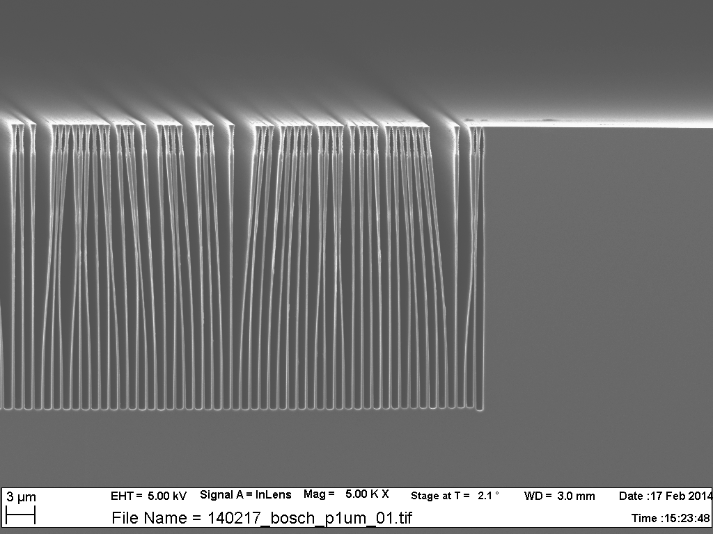
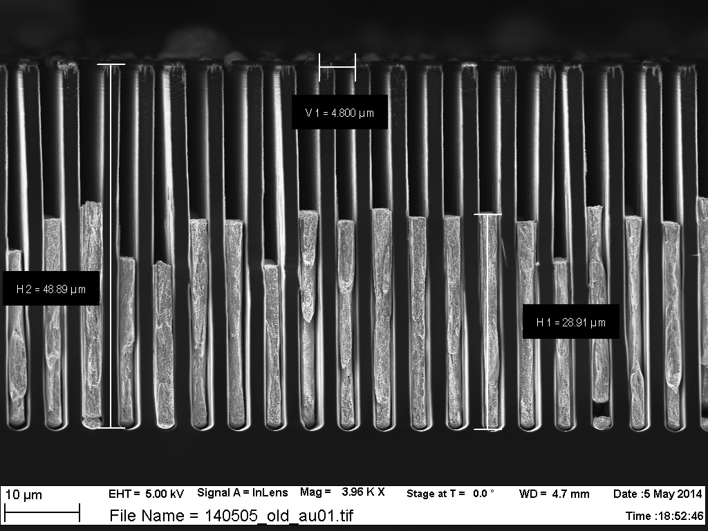
Grating parameters
- 80-140 μm Au absorption thickness
- 5.4 μm period
- \(\pi\) shift 45 keV
Silica microspheres
\(R = \frac{\log(\text{dark field})}{\log(\text{absorption})}\)
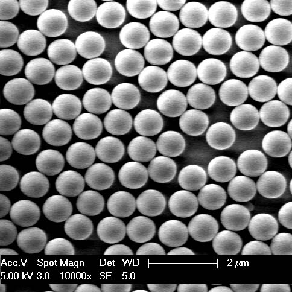Grating interferometry
phase stepping
Effects of microstructure
- Lynch et al. \[ \mu_d = \frac{3\pi}{\lambda^2}f |\Delta n|^2 d \begin{cases} D' & \text{if } D' \leqslant 1\\[2ex] \!\begin{align} D' - \sqrt{D'^2 - 1}\\ (1 + D'^{-2}/2) \\ + (D'^{-1} + D'^{-3} / 4) \\ \log\left(\frac{D' + \sqrt{D'^2 - 1}}{D' - \sqrt{D'^2 - 1}}\right) \end{align} & \text{otherwise} \end{cases} \]
- dark field as a function of sphere diameter and photon energy
Incoherent sum over the spectrum
\[ R(\energy) = \frac{\log B}{\log A} = \frac{\mu_d}{2k\beta} \]
\[ R = C\frac{\sum_\energy w(\energy)|\Delta n(\energy)|^2 \energy u(\energy)}{\sum_\energy w(\energy) \energy \beta} \]
where \(w(\energy)\) are the spectral weights, and \(u(\energy)\) is the conditional from Lynch
only one fit parameter: \(C\)
Microsphere samples
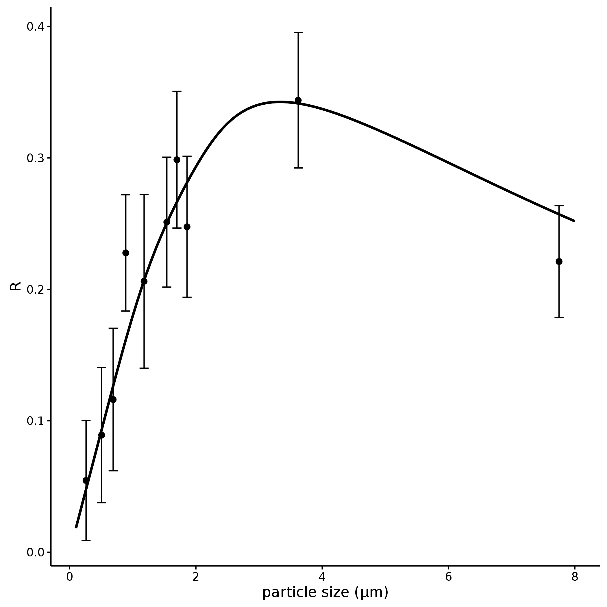Combine beamline + tube
courtesy of Goran Lovric
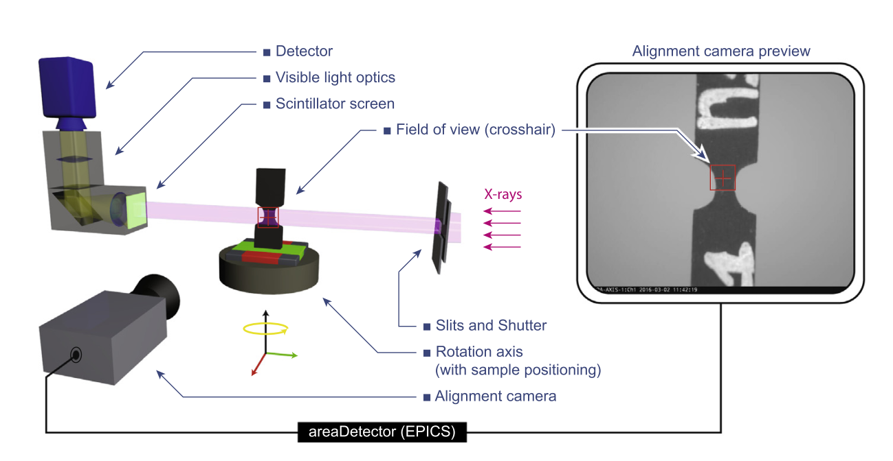 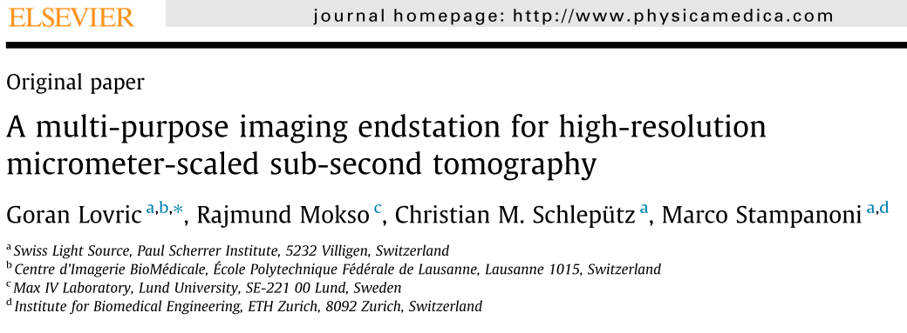Align the same region
- detailed beamline tomography, resolving the microstructure
- comparison with integrated tube data
Beamline scans
Negative result (no structural difference)
control
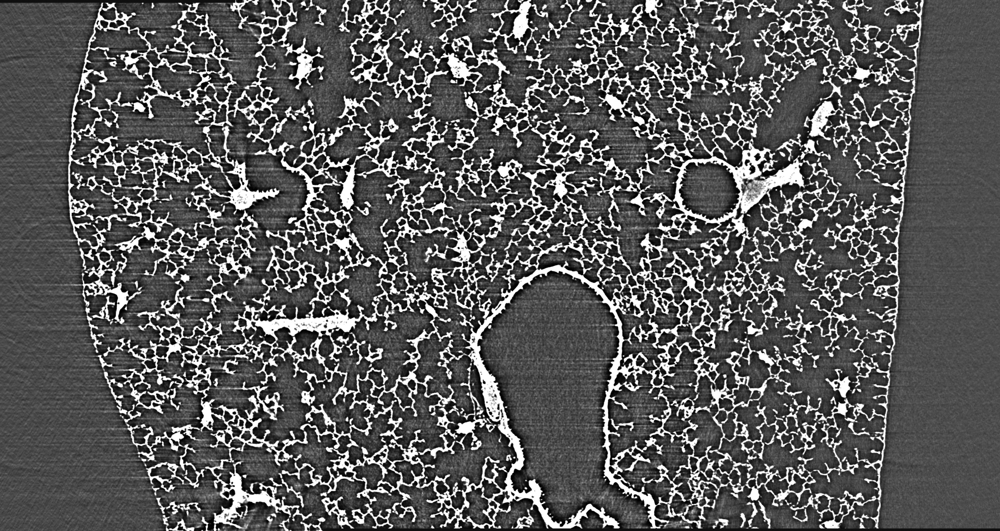smoke
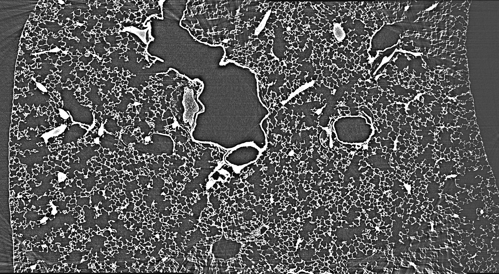Tube scans
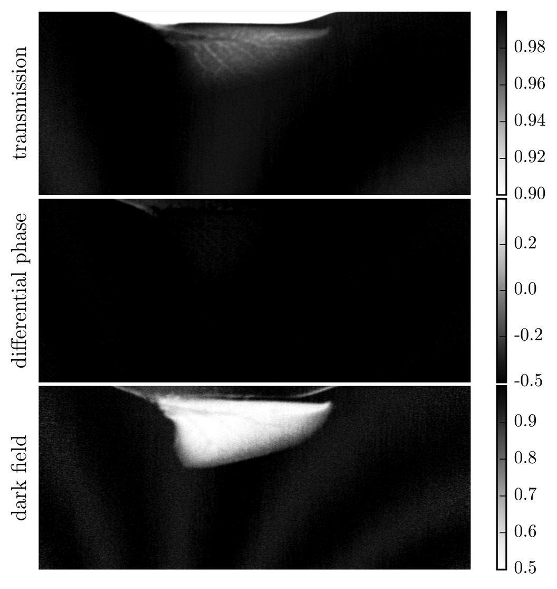Tube results
(also negative)
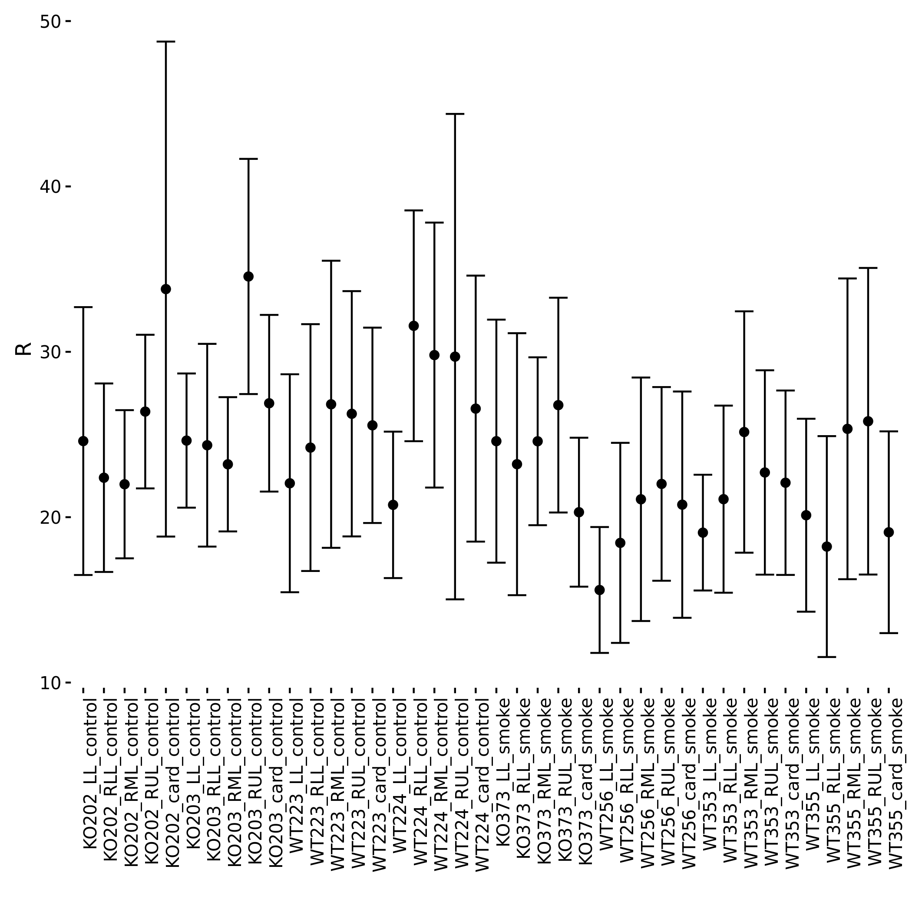Conclusions
- Operational setup that can be coordinated with beamline experiments
- Finally good understanding of dark-field interactions at high energies
Next experiments
- Medical: new rat samples from Bern
- Material science: water diffusion in concrete